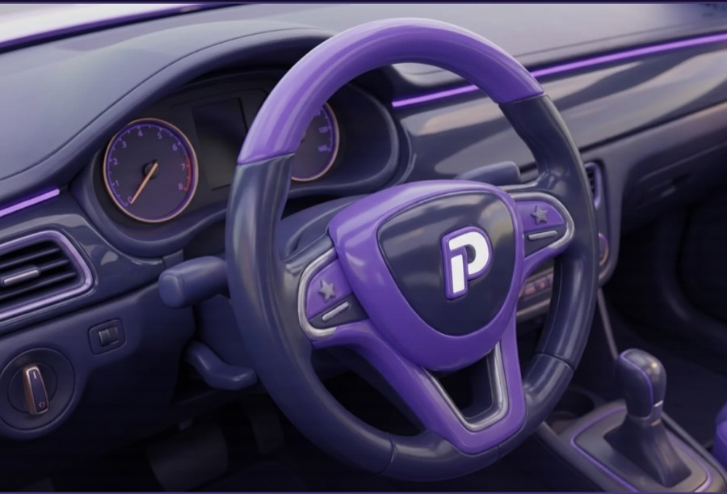

A · Le verdict monte sur la scène
La réponse se lit là où on a touché. Le trou de 225 px disparaît, le verdict est collé à l'image.
Le signal fantôme
Tu vas tourner à gauche. Touche la commande que ta main doit trouver.

Commodo gauche
✓ Trouvé
C'est bien lui.
Ta main le trouve sans quitter la route des yeux.
🔑Dans la vraie voitureMoteur coupé, actionne trois fois le clignotant sans baisser les yeux.
Continuer →
B · La carte du geste
Un seul bloc au lieu de trois : le verdict, le pourquoi et le devoir tiennent dans la même carte, cousue à la scène.
Le signal fantôme
Tu vas tourner à gauche. Touche la commande que ta main doit trouver.
C'est le seul que ta main atteint sans lâcher le volant. Les essuie-glaces sont de l'autre côté.
🔑Dans la vraie voitureMoteur coupé, actionne trois fois le clignotant sans baisser les yeux.
Continuer →
C · Le tampon
Le plus jeu des trois. Un tampon claque sur la scène, et le texte redevient du texte, sans carte ni cadre.
Le signal fantôme
Tu vas tourner à gauche. Touche la commande que ta main doit trouver.
Le commodo gauche.
Ta main le trouve sans quitter la route des yeux. Les essuie-glaces sont de l'autre côté.
Dans la vraie voitureMoteur coupé, actionne trois fois le clignotant sans baisser les yeux.
Continuer →